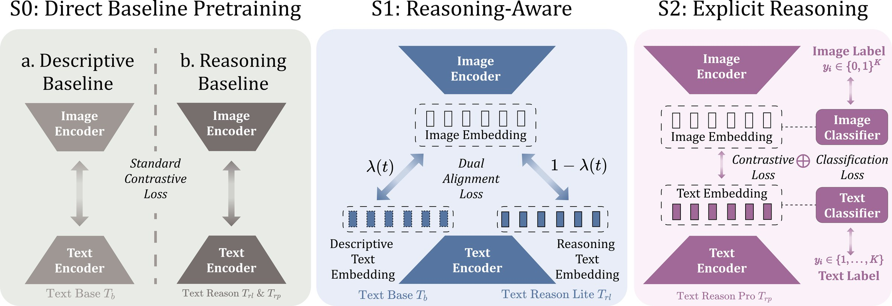

CLIP can describe a scene. Can it reason about one?
CLIP-style encoders learn from captions that say what is in an image. Many downstream tasks need more than that: why objects are arranged a certain way, what just happened, or what will happen next. ReasonCLIP-58M asks whether this kind of visually grounded inference can be learned through continual pretraining alone, with no new modules, no extra inference cost, and the standard transformers loading path.
The recipe has two stages. Stage 1 mixes reasoning captions into the usual descriptive alignment, so the encoder learns to reason without losing what it already does well. Stage 2 adds category-structured reasoning supervision across five types of commonsense inference. We also release the training data and a diagnostic benchmark, RCLIP-Bench.
CLIP L/14 + Stage 1
CLIP L/14 + Stage 2
CLIP L/14 + Stage 2
vision tower swap only
Two stages of continual pretraining
Every stage starts from a public CLIP or SigLIP checkpoint and trains for a single epoch. The encoders, projection heads and tokenizers are unchanged. The only new parameters are two small classification heads used in Stage 2, which are removed after training.

58M reasoning captions, grounded in the image
All training images come from CC12M. We first rewrite the noisy alt-text into three descriptive captions per image with Qwen2.5-VL-72B. Reasoning captions are then generated from visual evidence the descriptive captions already confirm. Prompts reject false causality, over-extension, hallucination and unsupported multi-step chains. In human spot checks of 500 samples per stage, more than 99% passed.
Three regenerated descriptive captions (Tb) for each of 10.4M CC12M images.
Hugging Face ↗Visual evidence is split into three clusters with one reasoning caption (Trl) each. Pairing them with three descriptive captions gives 9 combinations for each of 4.67M images.
Hugging Face ↗Qwen3-VL-32B labels each image with reasoning categories. For each of 5.5M images, three categories are sampled and each gets one caption (Trp).
Hugging Face ↗Five categories of commonsense inference
Number of ReasonPro-16M captions per category. Each image carries a multi-hot label over the five categories, which Stage 2 uses as supervision.
Does the model notice when the reasoning breaks?
RCLIP-Bench is built on 5,000 DOCCI images with human-written descriptions. For each image and each reasoning category, the model must rank one correct sentence above four hard negatives. The negatives come in three tiers, each harder to spot than the last.
The visual facts are wrong: swapped nouns, attributes, relations, subjects or sentence structure.
The reasoning rests on a false premise about what is visible.
The facts are right but the conclusion drawn from them is not.
Examples are taken from the public RCLIP-Bench release. Images are from DOCCI. The differences from the correct sentence are underlined after you answer.
Consistent gains across six backbones
We apply the same recipe to CLIP B/32, L/14 at 224 and 336 px, SigLIP So400m, SigLIP2 So400m and SigLIP2 Giant. Choose a backbone and a benchmark group to compare the base model with Stage 1 and Stage 2.
Where it costs
ImageNet zero-shot accuracy drops after reasoning-oriented continual pretraining: by 1–3 points after Stage 1 and 2–6 points after Stage 2 on ImageNet val, with the largest drops on ObjectNet. Our training captions are long and inferential, not category names, so we see this as a trade-off between label-style recognition and grounded reasoning. Stage 1 keeps most of the recognition ability. You can inspect every backbone under the ImageNet task above.
Swap the vision tower, keep everything else
We replace the CLIP encoder in LLaVA-NeXT (Qwen3-1.7B, frozen vision tower) with ReasonCLIP and keep the rest of the pipeline the same. Reasoning-heavy benchmarks such as MMVP and OKVQA improve, and the others stay roughly level.
| Benchmark | CLIP | ReasonCLIP | Δ |
|---|
Released checkpoints
ReasonCLIP keeps the original architecture, so loading is the standard Hugging Face code path. Only the model ID changes.
from PIL import Image import requests from transformers import AutoModel, AutoProcessor model_id = "RISys-Lab/ReasonCLIP-L14-224-S1" model = AutoModel.from_pretrained(model_id) processor = AutoProcessor.from_pretrained(model_id) url = "http://images.cocodataset.org/val2017/000000039769.jpg" image = Image.open(requests.get(url, stream=True).raw) inputs = processor(text=["a photo of a cat", "a photo of a dog"], images=image, return_tensors="pt", padding=True) probs = model(**inputs).logits_per_image.softmax(dim=1)
| Backbone | Stage 1 | Stage 2 | S0 · Rea | S0 · Des |
|---|
BibTeX
@inproceedings{zhang2026reasonclip58m,
title = {ReasonCLIP-58M: Visually Grounded Commonsense Reasoning Supervision for CLIP},
author = {Zhang, Sicheng and Naseer, Muzammal and Xie, Binzhu and Suryanto, Naufal and Qiu, Shi and Bentahar, Jamal and Akhtar, Naveed and Shah, Mubarak},
booktitle = {European Conference on Computer Vision (ECCV)},
year = {2026},
url = {https://arxiv.org/abs/2606.26794}
}
Code, data and models are released under CC BY-NC-SA 4.0.